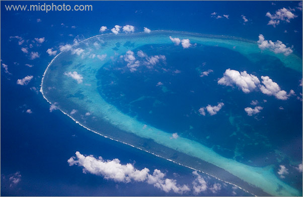

虽远必猪|老杨再谈南海问题
by 长沙杨飞
这几天南海问题吵得沸沸扬扬的，连我老妈这种不知政治为何物的人都问：听说南海出事了？
其实南海也没什么事，那里有几个岛礁，以前周边各国都没怎么在意，后来传说那儿可能有石油，于是大家就开始嚷嚷这些岛礁是我的。中国、菲律宾、越南、马来西亚等国都一起吵嚷起来。

中国嗓门最大，拳头也大，占了黄岩岛。菲律宾很生气，但是也没办法，因为它的海军只有几条祖传炮艇。2013年1月，菲律宾向国际法庭提请仲裁。前天仲裁结果出来了，判定中国地图上画的九段南海线无效。中国政府对此不予承认，随即全国爆发了疯狂的网络抵制运动，所有关于南海的新闻下面跟帖都是数万条，每条都是九个大字：犯我中华者，虽远必诛。
国与国之间有争议，怎么办？几千年来的潜规则都是谁拳头大谁说话。但是1945年发明核武器之后，这个情况有了变化。世界现在有了五个流氓大国，他们都有毁灭任何一个国家甚至全人类的本事。如果这五个国家之间有冲突，还遵循古制、直接开战，谁拳头大谁说话，那结果就是交战双方一起自杀，甚至全人类集体自杀。
人都死光了，还要那些鸟岛有个鸟用？所以，在核武器时代，谁拳头大谁有发言权的法则不能再用了。那应该怎么办呢？
在日常生活里，如果你和别人起了冲突，比拳头或者拿刀砍人都是不值得提倡的。文明人的方式是双方坐下来谈判，如果自己谈不拢，就提交法院，让法官来判。
国与国之间也是一样。南海的这些岛礁，有关国家个个都嗓门大，自己谈不拢，于是去找第三方仲裁，这合情合理。
菲律宾去找了第三方裁判。但是中国说，领土问题不能仲裁，只能双方自己谈判，所以我拒绝出庭。你可以拒绝出庭，人家也可以缺席判决。
说实话，国与国之间实力第一的原则也并没有完全过时。你判决了，中国当然可以置之不理。话说美国也是一样的流氓，凡是对自己不利的判决，它都一票否决或根本懒得理。对中国和美国这种老流氓，国际社会还真是一点办法都没有，因为国际法庭没有执行庭。凡是没有强制执行力的法庭判决都等同废纸。
当然，大国再有实力也不能纯耍流氓。做事要以理服人，树立一个光辉形象很重要。双方争执不下的时候去找第三方仲裁，这是正常逻辑。中国政府坚持不接受国际仲裁的逻辑在哪里？中国是《和平解决国际争端公约》的缔约国，这个公约第三十八条写得清清楚楚：“凡属法律性质的问题，特别是有关解释或适用国际公约的问题，各缔约国承认仲裁是解决通过外交途径所未能解决的纠纷的最有效也是最公正的方法。”
如果按照中国外交部的说法，菲律宾找的这个国际法院没有管辖权，那应该赶紧去找别的法庭，比如联合国的海洋法法庭，甚至成立一个双方都可以接受的特别法庭。
自己谈不拢，又不去找第三方仲裁，也不想打仗，那南海问题就成了一个死结。中国外交部真是一个养猪场，某些猪脑袋连这个逻辑都看不出来。
对了，中国也不是说完全不靠战争。仲裁结果还没出来，中国政府就组织舰队在南海大规模演习。可是中国真的敢动手吗？菲律宾后面站着美国，全世界就属美国拳头最大，不论是核武器库还是常规武器的海空军，没有任何国家是美国的对手。
话说回来，中国和美国其实是穿一条裤子的。双方互为最大贸易伙伴，美国政府发行的国债，中国是最大的买家，中国的官二代和富二代以及他们的家眷大多数也都在美国。不夸张地说，这两国是一损俱损，一荣俱荣。为了几个鸟岛送上全国人民的性命，甚至全世界人民的性命，这国家的领导人该有多么猪脑袋。所以我认为，南海是不可能打起来的。
南海自古以来并不是中国的内海。世界各国的军舰和商船几百年来都在里面穿行。直到1970年之前，黄岩岛都还是美军的靶场。现在中国突然跳出来说这些岛礁都是我的，鄙人觉得这主张底气不足。中国渔民世代在那打渔，越南、菲律宾和马来西亚的渔民世世代代也在那里打渔。每个人都嚷嚷此地自古以来就是我的，你说怎么办？
中国在1957年很大方地把夜莺岛送给了越南，现在却对小得多的南海鸟岛死咬不放，这种神经质的转换让人难以理解。中国政府做事严重缺乏一致性和连贯性。比如东海问题，中国多年来一直倡议“搁置争议，共同开发”，鄙人觉得这个倡议很好，南海问题为啥不照此办理呢？
中国现在这么阔气，在亚洲和东盟，哪个国家不得让中国三分？中国的南海外交完全可以做到由中国牵头组成一个合议庭（或称南海合作委员会），共同开发南海资源。像现在这样吼叫不接受、不参与、不承认，歇斯底里地叫喊南海的岛全是我的，一副恶霸样子，吃相十分难看。一言不合还军演，然后又不敢真开炮，丢人都丢到太平洋去了。
杨飞，
2016/7/14，长沙
关注老杨
杨飞作品集：www.midphoto.com
微信：yangfei789288
微信公众号：老杨书吧
新浪微博@长沙杨飞
推特Twitter@feiyang17
Facebook：yangfei999999@hotmail.com